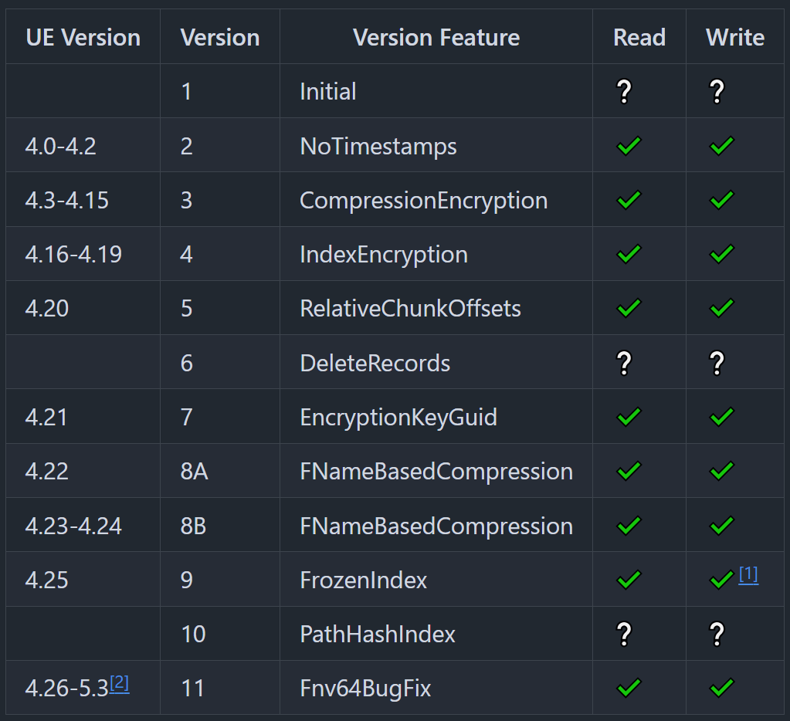
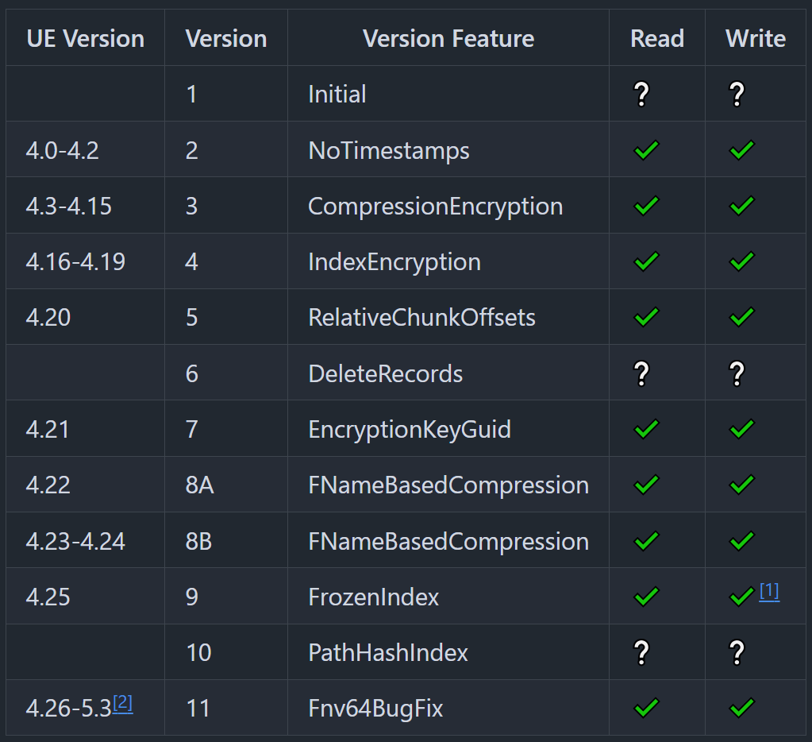

about
repak is an unreal pak reading and writing library

repak is an unreal pak reading and writing library
repak is an unreal pak reading and writing library
the idea for repak was when i was working on stove and needed mesh and texture data to properly display actors however looking at the libraries for pak reading, they were never quite right for what i wanted to do:
repak was originally made as a pak parsing library under the name unpak to allow extraction of meshes from paks for stove. i essentially made the implementation from scratch. once released it got some attention but not much until truman started some work on it.
the next part is kind of my fault. i didn't really know much about collaborative development so didn't accept truman's pull requests which led to him forking and renaming the project to add his writing implementation and cli to the repo.
because of this the unpak is now archived and development happens on truman's repak which is admittedly a much better place for collaboration